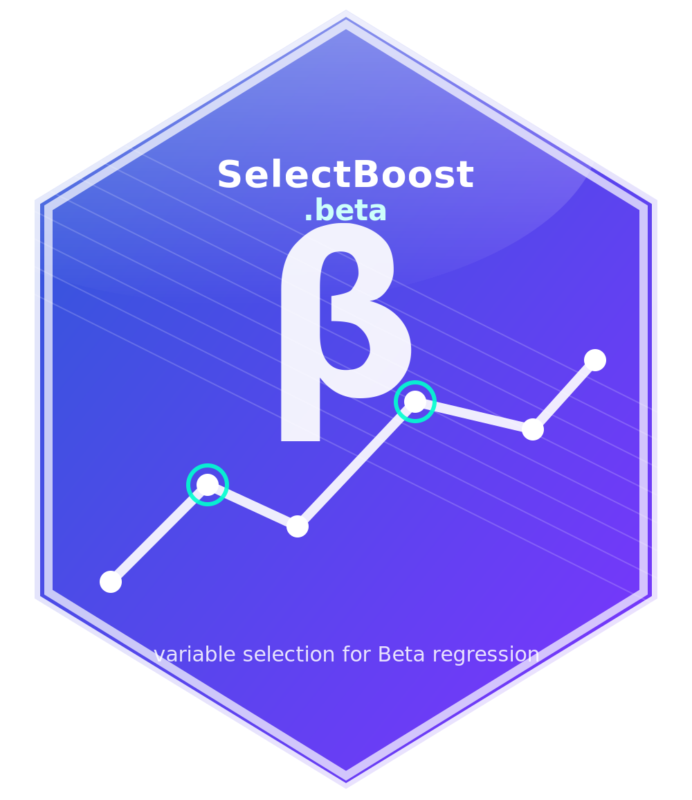

Changelog
Source:NEWS.md
SelectBoost.beta 0.4.5
- Added a pseudo-code vignette, refreshed the README with workflow details, and expanded the unit test suite for the new helpers.
- Fixed code and descriptions to get rid of notes during CRAN checks.
SelectBoost.beta 0.4.3
- Added
sb_beta()to run the full SelectBoost correlated-resampling loop with beta-regression selectors, plus a vignette illustrating the workflow. - Added vignette section demonstrating the extended simulator and interval selection.
SelectBoost.beta 0.4.2
- New
simulation_DATA()to generate interval-valued Beta-regression data:-
interval = "jitter"(symmetric) or"quantile"(Beta quantile intervals). - Works with
fastboost_interval(); added a small vignette and unit test. - Supports mixed mechanisms (row-wise jitter vs quantile), asymmetric jitter widths (
delta_low/delta_high), asymmetric quantile coverage (alpha_low/alpha_high), covariate-driven parameters (accept functions of(mu, X)), and optional missing bounds per row (na_rate,na_side).
-
SelectBoost.beta 0.4.1
-
Comparison helpers and visualizations:
-
compare_selectors_single(),compare_selectors_bootstrap()to run all selectors (AIC/BIC/AICc, GAMLSS LASSO/ENet*, GLMNET) and compute selection frequencies. -
plot_compare_coeff(),plot_compare_freq()heatmaps to compare selectors side by side. - Vignette expanded to include simulated data and two real-ish datasets after scaling to (0,1).
-
- Kept
fastboost_interval()(interval response stability selection), C++ IRLS speedups, andprestandardizeoption forbetareg_glmnet().- ENet requires
gamlss.lassoif installed.
- ENet requires
SelectBoost.beta 0.4.0
- Initial beta-regression integration for SelectBoost:
- Stepwise AIC, BIC, and AICc wrappers around
betareg. -
GAMLSS LASSO (
gamlss::ri) and optional Elastic-Net (gamlss.lasso::gnet). - Pure glmnet (IRLS + weighted Gaussian ENet) with optional prestandardize.
-
fastboost_interval()prototype for interval responses. - First vignette + roxygenized docs.
- Stepwise AIC, BIC, and AICc wrappers around